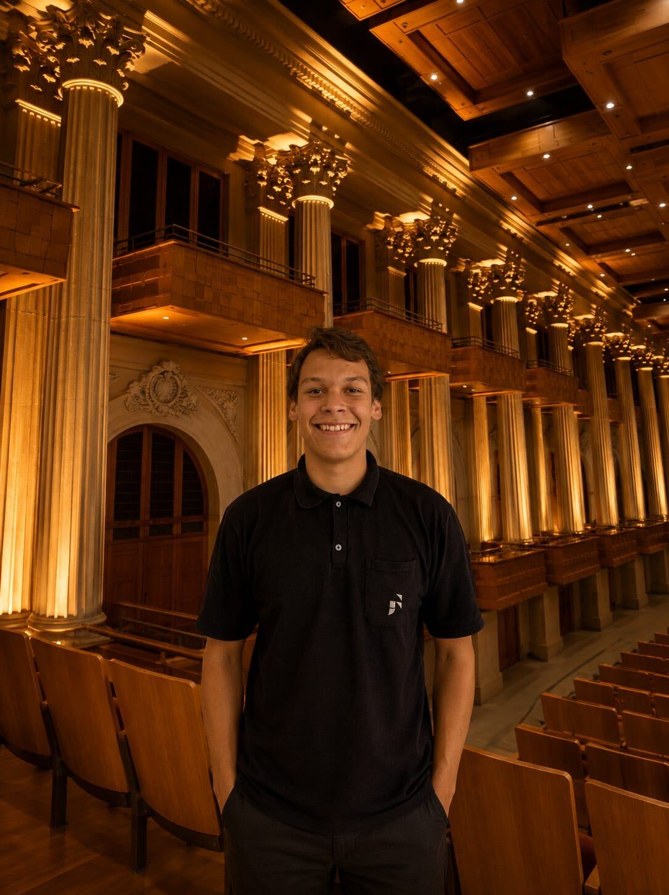
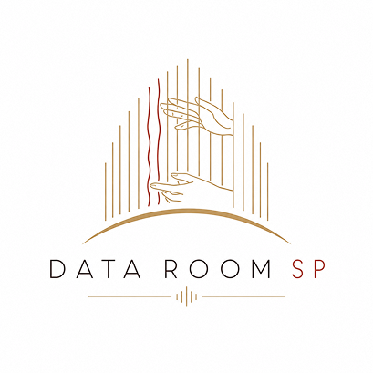
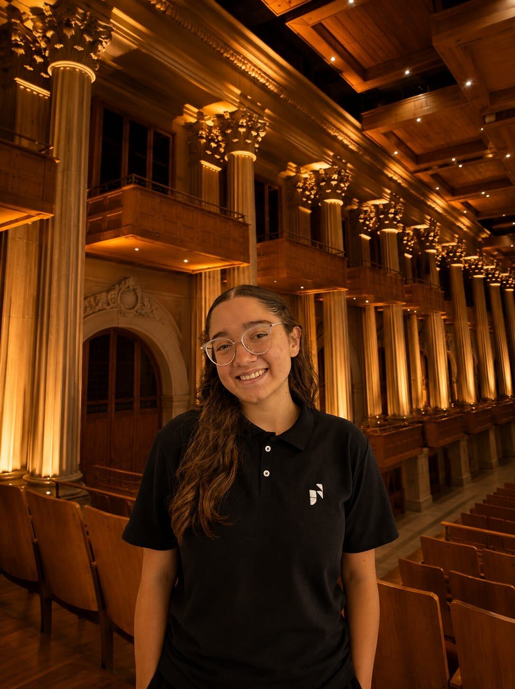
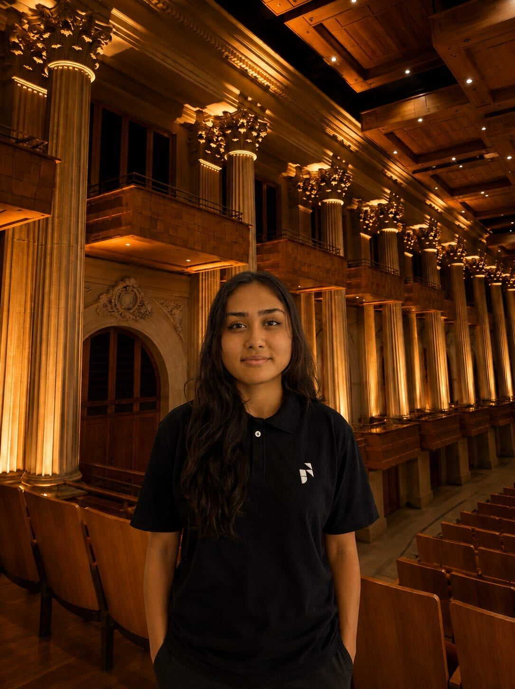
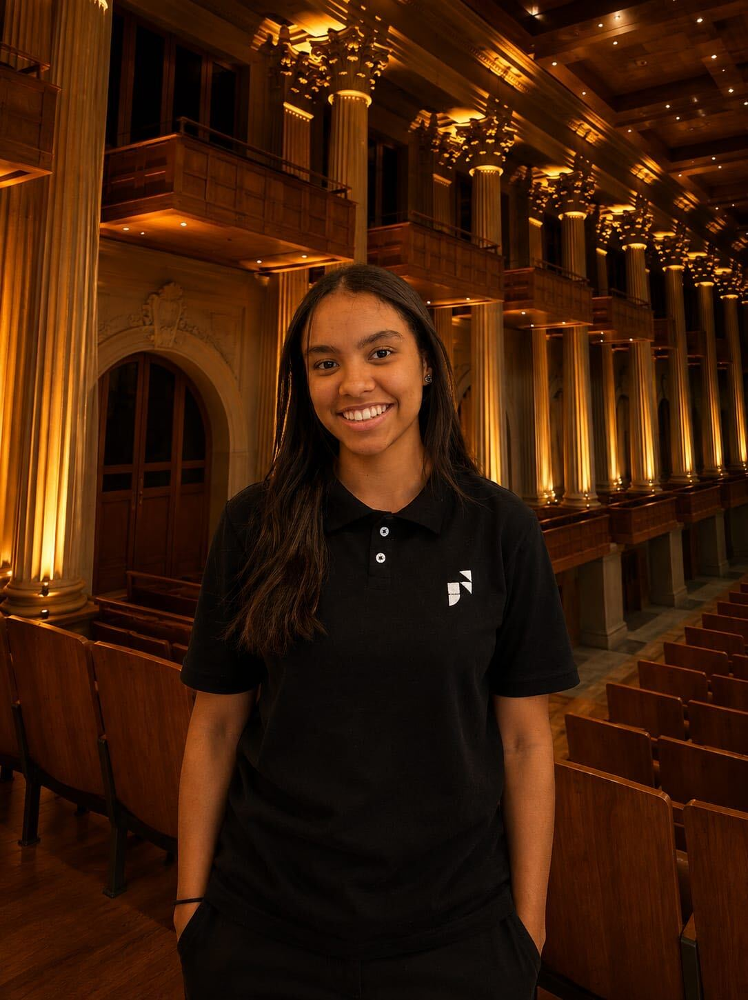

Conheça os integrantes de
Matemática de Dados e Estatística
Tema: o público da Sala São Paulo em números
3º HInstituto J&F
Objetivo do projeto
O objetivo desse trabalho é analisar o perfil do público da Sala São Paulo por meio da aplicação de conceitos de matemática e estatística, utilizando dados históricos sobre a ocupação dos eventos realizados no espaço.
Com base nessas informações, foram desenvolvidas análises abrangendo métricas, gráficos e dados estatísticos que permitiram a identificação de tendências ao longo do tempo, comparação de diferentes cenários e compreensão do comportamento do público.
Dessa forma, buscamos transformar os dados em informações valiosas e relevantes, contribuindo para uma visão mais ampla sobre a participação dos espectadores na Sala São Paulo.

Nosso time

Letícia Nascimento
Levy Rios

Mayumi Shimizu

Sofia Rodrigues
Fontes e referências
Fonte de dados
As análises apresentadas nesse trabalho baseiam-se nos relatórios anuais da Fundação Osesp, que reúnem informações sobre programações e desempenho da Sala São Paulo.
Para consultar os relatórios na íntegra, acesse o portal de transparência.
Referências do site
Os textos escritos no site foram baseados nas informações do site oficial da Fundação Osesp.
Para saber mais sobre a Fundação, consulte a página da Fundação Osesp.